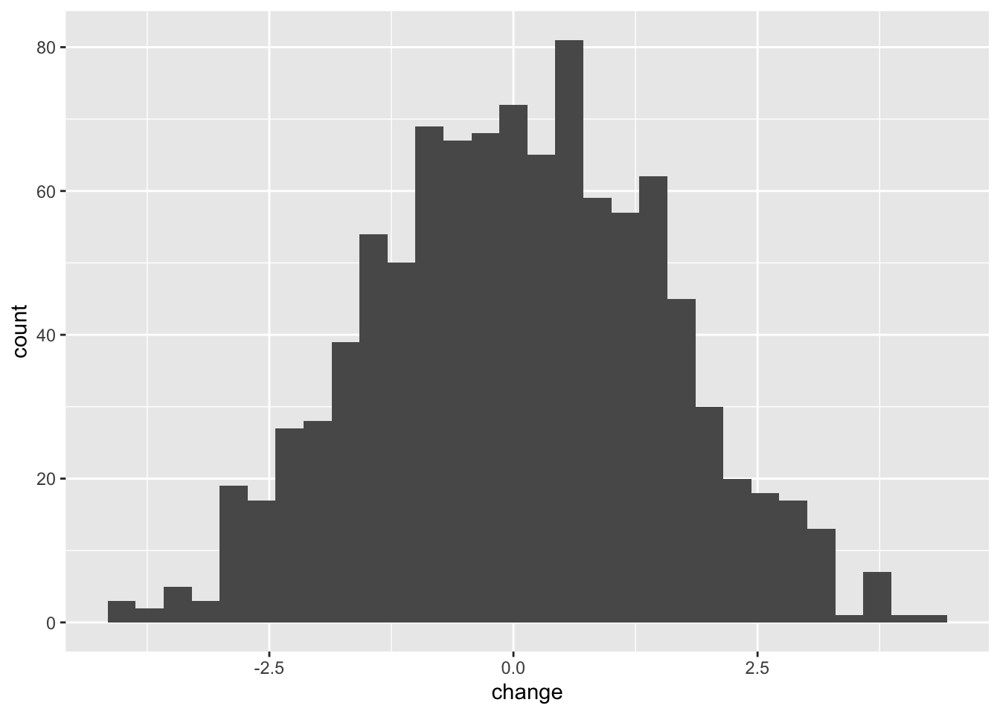

Chapter 12 Linear models with a single continuous explanatory variable
12.1 Background
Linear regression models, at their simplest, are a method of estimating the linear (straight line) relationships between two continuous variables. As an example, picture the relationship between two variables height and hand width (Figure ). In this figure there is a clear relationship between the two variables, and the straight line running through the cloud of data points is the fitted linear regression model.
The aim of linear regression is to (1) determine if there is a meaningful statistical relationship between the explanatory variable(s) and the response variable, and (2) to quantify those relationships by estimating the characteristics of those relationships. These characteristics include the slope and intercepts of fitted models, and the amount of variation explained by variables in the model.

Figure 12.1: A linear regression model fitted through data points.
12.2 Some theory
To understand linear regression models it is important to know that the equation of a straight line is \(y = ax+b\). In this equation, \(y\) is the response variable and \(x\) is the explanatory variable, and \(a\) and \(b\) are the slope and intercept of the line with the vertical axis (y-axis). These (\(a\) and \(b\)) are called coefficients. These are illustrated in Figure .
Figure 12.2: The equation of straight lines.
When looking at data points on a graph, unless all of the data points are arranged perfectly along a straight line, there will be some distance between the points and the line. These distances, measured parallel to the vertical axis, are called residuals (you have encountered them before in this course). These residuals represent the variation left after fitting the line (a linear model) through the data. Because we want to fit a model that explains as much variation as possible, it is intuitive that we should wish to minimise this residual variation.
One way of doing this is by minimising the sum of squares of the residuals (again, you have come across this concept a few times before). In other words, we add up the squares of each of the residuals. We square the values, rather than simply adding up the residuals themselves because we want to ensure that the positive and negative values don’t cancel each other out (a square of a negative number is positive). This method is called least squares regression and is illustrated in Figure : Which is the best fitting line?
Figure 12.3: Residuals and least squares: which is the best fitting line?
In fact, these residuals represent “error” caused by factors including measurement error, random variation, variation caused by unmeasured factors etc. This error term is given the label, \(\epsilon\). Thus we can write the model equation as:
\[y = ax+b+\epsilon\]
Sometimes, this equation is written with using the beta symbol (\(\beta\)) for the coefficients, so that the slope is \(\beta_0\) and the intercept is \(\beta_1\) for example.
\[y = \beta_0 x+\beta_1+\epsilon\]
The idea is that this equation, and its coefficients and error estimates, describe the relationship we are interested in (including the error or uncertainty).
Together this information allows us to not only determine if there is a statistically significant relationship, but also what the nature of the relationship is, and the uncertainty in our estimates.
12.3 Evaluating a hypothesis with a linear regression model
Usually, the most important hypothesis test involved with a linear regression model relates to the slope: is the slope coefficient significantly different from 0?, or should we accept the null hypothesis that the slope is no different from 0.
Sometimes hypotheses like this are a bit boring, because we already know the answer before collecting and analysing the data. What we usually don’t know is the nature of the relationship (the slope, intercept, their errors, and amount of variation explained). Usually it is more interesting and meaningful to focus on those details.
The following example, where we focus on the relationship between hand width and height, is one of these “boring” cases: we already know there is a relationship. Nevertheless, we’ll use this example because it helps us understand how this hypothesis test works.
The aim of this section is to give you some intuition on how the hypothesis test works.
We can address the slope hypothesis by calculating an F-value in a similar way to how we used them in ANOVA. Recall that F-values are ratios of variances. To understand how these work in the context of a linear regression we need to think clearly about the slope hypothesis: The null hypothesis is that the slope is not significantly different to 0 (that the data can be explained by random variation). The alternative hypothesis is that the slope is significantly different from 0.
The first step in evaluating these hypotheses is to calculate what the total sum of squares5 is when the null hypothesis is true (Figure A) - this value is the total variation that the model is trying to explain.
Then we fit our model using least squares and figure out what the residual sum of squares is from this model (Figure B). This is the amount of variation left after the model has explained some of the total variation - it is sometimes called residual error, or simply error.
The difference between these two values is the explained sum of squares, which measures the amount of variation in \(y\) explained by variation in \(x\). The rationale for this is that the model is trying to explain total variation. After fitting the model there will always be some unexplained variation (“residual error”) left. If we can estimate total variation and unexplained variation, then the amount of variation explained can be calculated with a simple subtraction:
\[Total = Explained + Residual\] … and, therefore … \[Explained = Total - Residual\]
Before using these values we need to standardise them to control for sample size. This is necessary because sum of squares will always increase with sample size. We make this correction by dividing our sum of squares measures by the degrees of freedom. The d.f. for the explained sum of squares is 1, and the d.f. for the residual sum of squares is the number of observations minus 2. The result of these calculations is the mean explained sum of squares (mESS) and the mean residual sum of squares (mRSS). These “mean” quantities are variances, and the ratio between them gives us the F-value. Notice that this is very similar to the variance ratio used in the ANOVA.
\[F = \frac{mESS}{mRSS}\]
If the explained variance (mESS) is large compared to the residual error variance (mRSS), then F will be large. The size of F tells us how likely or unlikely it is that the null hypothesis is true. When F is large, the probability that the slope is significantly different from 0 is high. To obtain the actual probabilities, the F-value must be compared to a theoretical distribution which depends on the two degrees of freedom (explained and residual d.f.). Once upon a time you would have looked this up in a printed table, but now R makes this very straightforward.
Figure 12.4: (A) the total variation around the overall mean Height value (B) the residual error of the model.
12.4 Assumptions
These models have similar assumptions to the other linear models6. These are (1) that the relationship between the variables is linear (hence the name); (2) that the data are continuous variables; (3) that the observations are randomly sampled; (4) that the errors in the model (the “residuals”) can be described by a normal distribution; and (5) and that the errors are “homoscedastic” (that they are constant through the range of the data). You can evaluate these things by looking at diagnostic plots after you have fitted the model. See page 112-113 in GSWR for a nice explanation.
12.5 An example using R
Let’s now use R to fit a linear regression model to estimate the relationship between hand width and height. One application for such a model could be to predict height from a hand print, for example left at a crime scene.
First, load the data:
classData <- read.csv("CourseData/classData.csv")We should then plot the data to make sure it looks OK.
ggplot(classData,aes(x=HandWidth,y=Height)) +
geom_point()
This looks OK, and the relationship looks fairly linear. Now we can fit a model using the lm function (same as for ANOVA!).7
The response variable is always the one we would like to predict, in this case Height. The explanatory variable (sometimes called the predictor) is HandWidth. These are added to the model using a formula where they are separated with the ~ (“tilde”) symbol: Height ~ HandWidth. In the model expression, we also need to tell R where the data are using the data = argument. We can save the model as an R object by naming it e.g. mod_A <-.
mod_A <- lm(Height ~ HandWidth, data = classData)Before proceeding further we should evaluate the model using a diagnostic plot. We can do this using the autoplot function in the ggfortify package (you may need to install and/or load the package).
library(ggfortify)
autoplot(mod_A) These diagnostic plots allow you to check that the assumptions of the model are not violated. On the left are two plots which (more or less) show the same thing. They show how the residuals (the errors in the model) vary with the predicted value (height). Looking at the plots allows a visual test for constant variance (homoscedasticity) along the range of the data. In an ideal case, there should be no pattern (e.g. humps) in these points. On the top right is the QQ-plot which shows how well the residuals match up to a theoretical normal distribution. In an ideal case, these points should line up on the diagonal line running across the plot. The bottom right plot shows “leverage” which is a measure of how much influence individual data points have on the model. Outliers will have large leverage and can mess up your model. Ideally, the points here should be in a cloud, with no points standing out from the others. Please read the pages 112-113 in the textbook GSWR for more on these. In this case, the model looks pretty good.
These diagnostic plots allow you to check that the assumptions of the model are not violated. On the left are two plots which (more or less) show the same thing. They show how the residuals (the errors in the model) vary with the predicted value (height). Looking at the plots allows a visual test for constant variance (homoscedasticity) along the range of the data. In an ideal case, there should be no pattern (e.g. humps) in these points. On the top right is the QQ-plot which shows how well the residuals match up to a theoretical normal distribution. In an ideal case, these points should line up on the diagonal line running across the plot. The bottom right plot shows “leverage” which is a measure of how much influence individual data points have on the model. Outliers will have large leverage and can mess up your model. Ideally, the points here should be in a cloud, with no points standing out from the others. Please read the pages 112-113 in the textbook GSWR for more on these. In this case, the model looks pretty good.
Now that we are satisfied that the model doesn’t violate the assumptions we can dig into the model to see what it is telling us.
To test the (slightly boring) slope hypothesis we use the anova function (again, this is the same as with the ANOVA).
anova(mod_A)## Analysis of Variance Table
##
## Response: Height
## Df Sum Sq Mean Sq F value Pr(>F)
## HandWidth 1 1038.5 1038.46 28.397 1.017e-05 ***
## Residuals 29 1060.5 36.57
## ---
## Signif. codes: 0 '***' 0.001 '**' 0.01 '*' 0.05 '.' 0.1 ' ' 1When you run this function, you get a summary table that looks exactly like the one you got with an ANOVA. There are degrees of freedom (Df), Sums of Squares (Sum Sq), Mean Sums of Squares (Mean Sq) and the F value and p-value (Pr(>F)).
The most important parts of this table are the F value (28.3968) and the p-value (0.00001017): as described above, large F values lead to small p-values. This tells us that it is VERY unlikely that the null hypothesis is true and we should accept the alternative hypothesis (that height is associated with hand width)
We could report the results of this hypothesis test like this: There was a statistically significant association between hand width and height (F = 28.3968, d.f. = 1,29, p < 0.001)
Now we can dig deeper by asking for a summary of the model.
summary(mod_A)##
## Call:
## lm(formula = Height ~ HandWidth, data = classData)
##
## Residuals:
## Min 1Q Median 3Q Max
## -12.498 -3.748 -0.188 5.502 8.812
##
## Coefficients:
## Estimate Std. Error t value Pr(>|t|)
## (Intercept) 133.9464 7.7862 17.203 < 2e-16 ***
## HandWidth 4.6552 0.8736 5.329 1.02e-05 ***
## ---
## Signif. codes: 0 '***' 0.001 '**' 0.01 '*' 0.05 '.' 0.1 ' ' 1
##
## Residual standard error: 6.047 on 29 degrees of freedom
## Multiple R-squared: 0.4947, Adjusted R-squared: 0.4773
## F-statistic: 28.4 on 1 and 29 DF, p-value: 1.017e-05This summary has a lot of information. First we see Call which reminds us what the formula we have used to fit the model. Then there is some summary information about the residuals. Ideally these should be fairly balanced around 0 (i.e. the Min value should be negative but with the same magnitude as Max). If they are wildly different, then you might want to check the data or model. In this case they look OK.
Then we get to the important part of the table - the Coefficients. This lists the coefficients of the model and shows first the Intercept and then the slope, which is given by the name of the explanatory variable (HandWidth here). For each coefficient we get the Estimate of its value, and the uncertainty in that estimate (the standard error (`Std. Error)).
These estimates and errors are each followed by a t value and a p-value (Pr(>|t|)). These values provide a test of whether the slope/intercept is different from zero. In this case they both are. The t-tests are indeed doing t-tests of these estimates, in the same way that a regular t-test works, so that the significance depends on the ratio between signal (the estimate) and the noise (the standard error). This is illustrated for the coefficient estimates for our model in Figure .

Figure 12.5: Illustration of the coefficient estimates for our model. The peak of the distribution is at the coefficient estimate, and the spread of the distribution indicates the standard error of the mean for the estimate. The statistical significance of the coefficient is determined by the degree of overlap with 0.
The summary then gives some information about the amount of residual variation left after the model has been fitted (this is the \(\epsilon\) term in the equations at the start of this worksheet). Then we are told what the \(R^2\) value is 0.4947. The adjusted \(R^2\) is for use in multiple regression models, where there are many explanatory variables and should not be used for this simple regression model. So what does \(R^2\) actually mean?
\(R^2\) is the square of the correlation coefficient \(r\) and is a measure of the amount of variation in the response variable (Height) that is explained by the model. If all the points were sitting on the regression line, the \(R^2\) value would be 1. This idea is illustrated in Figure .
We could describe the model like this:
There is a statistically significant association between hand width and height (F = 28.3968, d.f. = 1,29, p < 0.001) The equation of the fitted model is: Height = 4.66(\(\pm\) 0.87) \(\times\) HandWidth + 133.95(\(\pm\) 7.79). The model explains 49% of the variation in height (\(R^2\) = 0.495).
… or maybe, The model, which explained 49% of the variation in height, showed that the slope of the relationship between hand width and height is 4.66 \(\pm\) 0.87 which is significantly greater than 0 (t = 17.20, p < 0.01)
Figure 12.6: An illustration of different R-squared values.
A plot is usually a good idea because it is easier for the reader to interpret than an equation, or coefficients. The ggplot2 package has a neat and simple function called geom_smooth which will add the fitted regression line to simple models like this. For linear regression models you simply need to tell it to use method = "lm". This will plot the fitted regression model, and will add, by default" a shaded “ribbon” which represents the so called “95% confidence interval” for the fitted values. These are 2 time the standard error.
ggplot(classData,aes(x = HandWidth,y = Height)) +
geom_point() +
geom_smooth(method = "lm")
Question: If police find the 9.8cm wide hand print at a crime scene, what is your best guess of the height of the person involved?
12.6 Exercises - Linear Regression
12.6.1 Background
Male crickets produce a “chirping” sound by rubbing the edges of their wings together: the male cricket rubs a sharp ridge on his wing against a series ridges on the other wing. In a 1948 study on striped ground cricket (Allonemobius fasciatus), the biologist George W. Pierce recorded the frequency of chirps (vibrations per second) in different temperature conditions.
Crickets are ectotherms so their physiology and metabolism is influenced by temperature. We therefore believe that temperature might have an effect on their chirp frequency.
12.6.2 Your task
The data file chirps.csv contains data from Pierce’s experiments. Your task is to analyse the data and find (1) whether there is a statistically significant relationship between temperature and chirp frequency and (2) what that relationship is.
The data has two columns - chirps (the frequency in Hertz) and temperature (the temperature in Fahrenheit). You should express the relationship in Celsius.
Import the data
Use
mutateto convert Fahrenheit to Celsius (Google it)Plot the data
Fit a linear regression model with
lmLook at diagnostic plots to evaluate the model
Use
anovato figure out if the effect of temperature is statistically significant.Use
summaryto obtain information about the coefficients and \(R^2\)-value.Summarise the model in words.
Add model fit line to the plot.
Can I use cricket chirp frequency as a kind of thermometer?